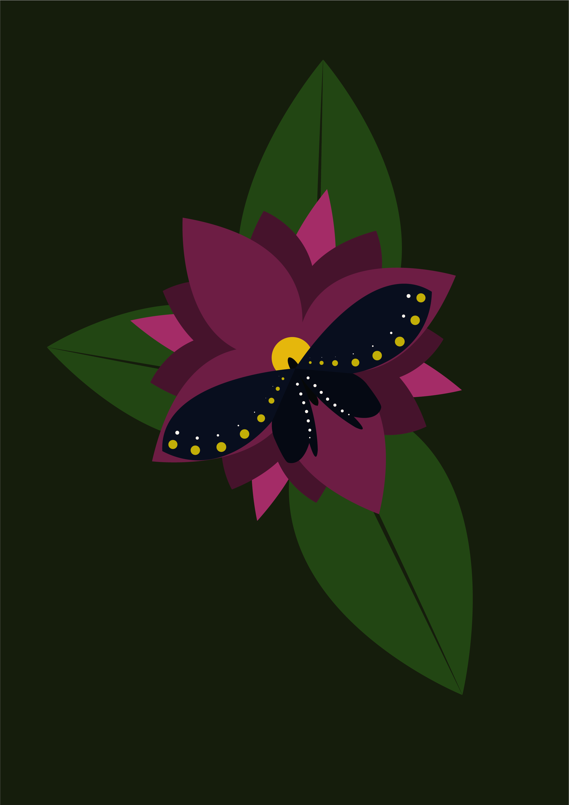

Vježba 1 - izrada fonta u programu FontForge
Vježba 2 - izrada maske krivulja preko izrađenog fonta
Vježba 3 - multipliciranja i transformacije objekata
Vježba 4 - spajanje objekata i primjena različitih gradijenata
Projektni zadatak 1 - kombiniranje svih tehnika iz vježbi 1,2,3,4
Vježba 5 - retuširanje, korekcije boja i uklanjanje nedostataka
Vježba 6 - koloriranja crno-bijele slike
Vježba 7 - pažljivo kombiniranje više slika u jednu cjelinu
Projektni zadatak 2 - kombiniranje svih tehnika iz vježbi 5,6,7
Vježba 8 - spajanje statične i pokretne slike u kinematograf
Vježba 9 - spajanje više video isječaka u jednu cjelinu